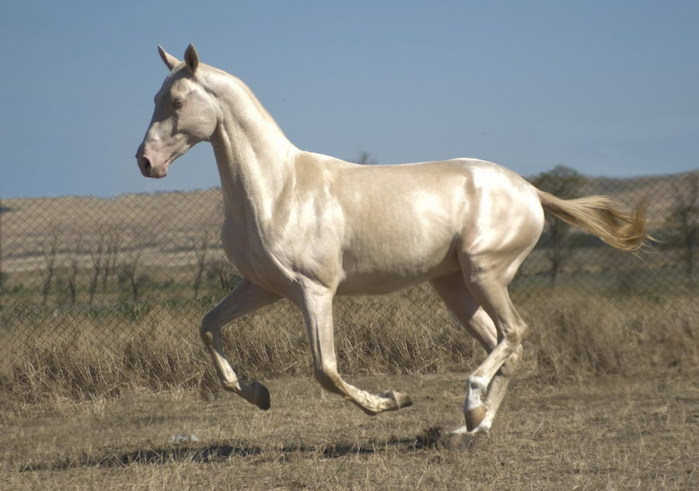
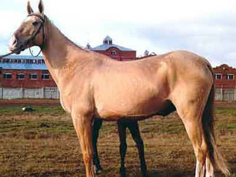
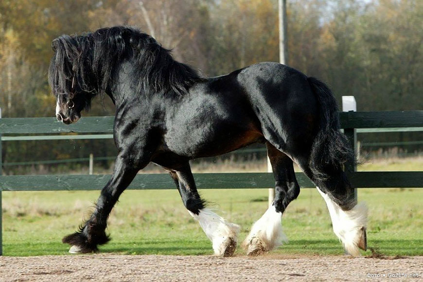

Верхові породи коней
Верхові породи коней використовуються для верхової їзди, туризму, іподрому. До верхових належать такі породи коней.
- Ахалтекінська. Ця порода з'явилася приблизно 5 тисяч років тому на території сучасного Туркменістану і є однією з найдавніших. Представники цієї породи коней зовсім невибагливі в їжі, попри зовнішню крихкість і витонченість, відмінно пристосовані до їзди й довго не втомлюються, вони зовсім не мають надлишкових жирових відкладень. Їхні масті найрізноманітніші, але найбільш цінуються рідкісні забарвлення, такі масті як бура, каракова, ізабеллова та солова. 
- Арабська. Порода з'явилася ще в 4-7 століттях на Аравійському півострові. Є нащадками величезної кількості інших порід і сьогодні використовуються у схрещуванні для поліпшення інших порід. Дуже витривалі, беруть участь у кінних пробігах, можуть пробігти до сотні миль. Допускаються такі масті: сіра, руда, гніда, ворона. Мають увігнутий профіль, маленькі вуха, косо поставлені плечі, високо посаджений хвіст.
- Ганноверська. Спортивна порода, багато років бере участь у змаганнях із виїздки та конкуру, найчисленніша з напівкровних на території Європи. Порода з'явилася в Німеччині, масть може бути будь-яка, частіше одноколірна. Представникам цієї породи коней властиві білі плями. Мають великі виразні очі, м'язисті ноги і круп, зовні схожі на англійських чистокровних побратимів, які є найдорожчими у світі. Вони дуже живі й потужні в стрибках.
- Терська. Молода порода, яка з'явилася понад 60 років тому. Задля її появи використовувалися арабські, стрілецькі, донські й інші породи коней. Свою назву отримала від Терського кінного заводу, на якому і з'явилася. Ці коні мають міцну конституцію, за розміром вони більші за арабських, але дуже схожі зовні. У них яскраво виражена східна породність і сильні ноги. Найчастіше мають світло-сіру масть, яка відливається матовим сріблястим кольором. Це спортивні коні, їх активно використовують у прокаті, кінному туризмі. 
- Вестфальська. Представники цієї породи коней відомі своїми спортивними досягненнями. Їхня батьківщина також у Німеччині. Ці коні потужні і великі, вони мають багато спільного з ганноверською породою. Мають широкий корпус, виражену холку, косо поставлену лопатку, приспущений круп, сухі ноги. Масть найчастіше руда або гніда, але трапляються сірі й вороні.
- Голштинська. Досить стара порода, її історія сягає корінням 14 століття. З'явилася на території Німеччини. Коні мають прямий профіль, великі очі, вигнуту в основі шию, холку, що виступає, високо посаджений трохи піднятий хвіст. Забарвлення може бути будь-яким, частіше - з білими плямами. Використовуються для виїздки й конкуру, а також у перегонах екіпажів.
Упряжні породи коней
Упряжні породи коней, відповідно, призначені для різнобічного використання в упряжі. Вони поділяються на легкоупряжних і важкоупряжних.
До перших належать такі породи, як орловський кінь. Це відома російська порода, в упряжі вона біжить жвавою риссю. Порода з'явилася майже 250 років тому, особливо відома використанням у трійках. Задля її створення використовували арабську, голландську, мекленбургську та інші породи коней. Вважається великою породою, найпопулярніші масті - сіра, червоно-сіра, сіра в яблуках, рідше трапляються гніда, ворона, руда та чала масті, зовсім рідкісні - булані та солові. Шия високо поставлена, вигин - лебединий, ноги - міцні, спина – м’язиста, мають дуже пишну гриву та хвіст. Інші легкоупряжні породи коней - німецький рисак, французька рисиста, мезенська, хакне.
До важкоупряжних відносять такі породи коней:
- Шайр - найвищий кінь у світі, може досягати 219 см, вага - до півтори тонни. Допустима будь-яка масть, характерні залисини на голові та білі панчохи. 
- Тінкер ірландська порода, яку також називають Циганською через змішання крові. Мають середній зріст, міцні й сильні ноги. Масть характеризуються трьома типами, бувають чубарі, чалі, вороні з білими мітками. Можуть бути як великими - 160 см і 700 кг, так і порівняно невеликими - 135 см і 240 кг. Представники цієї породи коней популярні серед початківців вершників.
- Вятська порода частіше використовується як домашній кінь, відрізняється спокоєм і високою працездатністю. Мають міцне тіло, середній зріст - приблизно 150 см, широкий лоб, коротку шию, короткі ноги, пишну гриву.
- Торійська. Є результатом схрещування низькорослих естонських кобил із норфолк-родстер, чим пояснюється її зовнішність - короткі кінцівки, округле тіло, невелика голова. Середня висота складає 154 см. Найпопулярніша масть - руда та гніда, трапляються вороні й чалі коні. Мають високу працездатність і спокійний характер, тому популярні як домашні коні.
- Першерон. Вважаються одними з найгарніших коней, завдяки сухій конституції, масивності, спритності. Справжні ваговози, мають м'який хід і дуже високий рівень витривалості. Ці породисті коні запозичили у своїх арабських побратимів оригінальну сіру масть.
- Також до важкоупряжних порід належать ауксуа, бретонський ваговоз, булон, дєстріе, італійська, ірландська та ін.
Комбіновані породи коней
Є породи для комбінованого використання, які використовують і для верхових, і для запряжних, і для в'ючних цілей. До них належать башкирська, карачаївська, якутська, фризька, кабардинська, донська, кустанайська тракененська, казахська порода коней. Останні використовуються як верхові, в'ючні та м'ясо-молочні. До казахської породи часто відносять кушумського та мугалжарського коней.